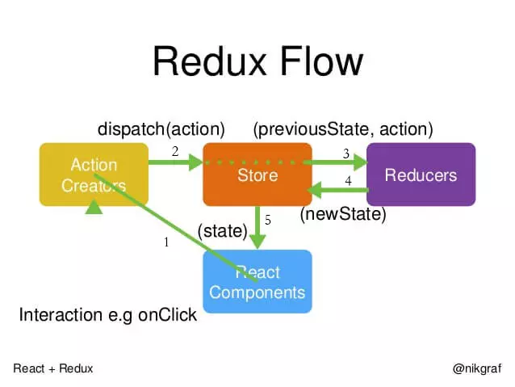
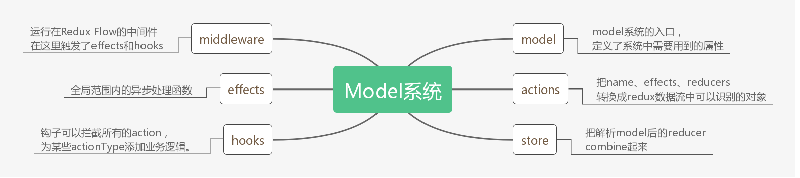
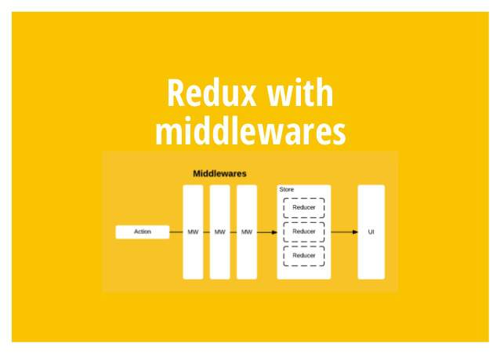

React 全家桶提供给了我们一套较为成熟的解决方案。可以应对各种复杂前端 web 系统。但是当你熟悉了之后会发现，许多时候都在机械劳作和编写模板代码。针对这种情况，我们是否有办法把机械劳作和模板代码交给程序去做，我们只要关心业务如何实现就可以了？MirrorJS 就是在这种情况下产生的，它封装了 Redux 数据流的过程，给开发人员提供了非常大的便利。一款简洁、高效、易上手的 React 框架。
背景介绍
Mirror官方文档说明了当前React+Redux的应用存在的一些问题。
一个典型的 React/Redux 应用看起来像下面这样：
一个 actions/ 目录用来手动创建所有的 action type（或者 action creator）；
一个 reducers/ 目录以及无数的 switch 来捕获所有的 action type；
必须要依赖 middleware 才能处理 异步 action；
明确调用 dispatch 方法来 dispatch 所有的 action；
手动创建 history 对象关联路由组件，可能还需要与 store 同步；
调用 history 上的方法或者 dispatch action 来手动更新路由；
存在的问题？太多的 样板文件 以及繁琐甚至重复的劳动。
实际上，上述大部分操作都是可以简化的。比如，在单个 API 中创建所有的 action 和 reducer；比如，简单地调用一个函数来 dispatch 所有的同步和异步 action，且不需要额外引入 middleware；再比如，使用路由的时候只需要关心定义具体的路由，不用去关心 history 对象，等等。
这正是 Mirror 的使命，用极少数的 API 封装所有繁琐甚至重复的工作，提供一种简洁高效的更高级抽象，同时保持原有的开发模式。
常规开发
举个例子来说开发一个登陆页面，可能需要涉及到以下几个文件。
login.js基础布局样式，页面逻辑。loginSmart.js连接redux中的状态和方法。loginAction.js方法名称。actionTypes.js方法类型。rootSaga.js在中间件监听事件方法类型。loginSaga.js中间件捕获之后的具体执行内容。loginService.js发起接口请求。loginReducer.js存储接口返回的结果。

使用MirrorJS
这是一个简单的示例
- 如果开发人员愿意，他可以把代码都放在一个文件里面就能完成功能开发，并且它是基于redux数据流的。
- reducers里面的方法名称取代了
3. loginAction.js，4. actionTypes.js,8. loginReducer.js - effects不仅包含reducers的能力，而且还取代了
5 rootSaga.js，6 loginSaga.js，7 loginService.js - 剩下的
1 login.js和2 loginSmart.js，他们的思路基本一致都是分成了dump和smart组件
1 | import React from 'react' |
思考几个问题
这样知道他们的对应关系后，我们才能更好的去解读源码。但是在解读源码之前我希望大家能思考几个问题。
mirror.model({})这种写法是使用了 js 里面什么设计模式？充分利用了 js 的什么特性？- 使用
actions.modelName.increment()是如何进到这里的？为什么按照 model 这种写法之后，我就可以用actions.modelName.increment()去调用 model 里面的方法了。 - model 中的 reducers 和 effects 里面的 function 究竟是 action 还是 reducer？
- effects 和 reducers 有什么区别？都写到 effects 里面可不可以？effects 和 reducers 都是利用了 js 的什么特性？
- reducer 是什么东西？为什么叫做 reducer？reducer 有什么注意事项？
- hook 是怎么实现做到拦截全局 action 的？
源码解读
推荐 clone 我的源码https://github.com/wangruolong/web-front-end/tree/master/source-code-mirrorjs
里面有大量的注释和精心制作的运行结果，可以助你快速掌握！

model.js
作用：把 reducer封装成闭包，在全局范围内使用。
1 | import { resolveReducers, addActions } from './actions' |
actions.js
作用：把 reducer 和 effects 转换成 redux 能识别的 action类似这种dispatch({ type:${modelName}${SEP}${actionName}, data })
1 | import { dispatch } from './middleware' |
middleware.js
作用：执行全局范围内的 effects，执行全局的钩子 hooks
- 参数为什么叫做 next？next 就是 dispatch
- 默认执行其他中间件传递过来的 action
- 如果 effects 里面有对应的 actionType，则 effects 里面的 action 优先级更高
- 执行钩子里面的函数，并把 action 和 getState 传递给他们
1
2
3
4
5
6
7
8
9
10
11
12
13
14
15
16
17
18
19
20
21
22
23
24
25import { effects } from './effects'
import { hooks } from './hook'
function warning() {
throw new Error(
'You are calling "dispatch" or "getState" without applying mirrorMiddleware! ' +
'Please create your store with mirrorMiddleware first!'
)
}
export let dispatch = warning
export let getState = warning
export default function createMiddleware() {
return middlewareAPI => {
dispatch = middlewareAPI.dispatch
getState = middlewareAPI.getState//getState可以获取redux里面的所有状态
return next => action => {
//1.next就是dispatch
let result = next(action)//2.默认执行其他中间件传递过来的action
if (typeof effects[action.type] === 'function') {//3.如果effects里面有对应的action type，则effects里面的action优先级更高
result = effects[action.type](action.data, getState)
//执行钩子里面的函数，并把action和getState传递给他们
hooks.forEach(hookFun => hookFun(action, getState))
return result
}
}
}

effects.js
作用：传值赋值与引用赋值。
JS 中的类型只有 6 种，其中基本数据类型有 5 种分别为 string，number，boolen，null，undefined。引用类型有一种，就是 object。object 是一个大的综合体。在 JS 中除了那 5 个基本数据类型以外，其他的一切皆对象。
1 | // Registry of namespaced effects |
hooks.js
作用：在全局范围内拦截 action
- 用个钩子把函数勾起来
- 把钩子一个个拿起来看看
- 把第二个钩子删掉
- 把钩子一个个拿起来看看
1 | export const hooks = [] |
总结
mirror.model({})这种写法是使用了 js 里面什么设计模式？充分利用了 js 的什么特性？
使用了模块模式。充分利用了 js 闭包的特性。- 使用
actions.modelName.increment()是如何进到这里的？为什么按照 model 这种写法之后，我就可以用actions.modelName.increment()去调用 model 里面的方法了。
分两种情况，一种是 effects，另外一种是 reducers，两个的触发过程是不一样的。 - model 中的 reducers 和 effects 里面的 function 究竟是 action 还是 reducer？
action 里面函数的作用是 dispatch actionType 到 redux 中，而 reducer 里面函数的作用是接收这个 actionType 并返回新的 store 对象。actions.modelName.xxx 通过某种方式进入到了这里，所以这里更像是 saga 的中间层。 - effects 和 reducers 有什么区别？都写到 effects 里面可不可以？effects 和 reducers 都是利用了 js 的什么特性？
effects 有经过 middlewave，reducers 没有经过 middlewave。可以是可以，但是不建议这么做。利用了闭包的特性 - reducer 是什么东西？为什么叫做 reducer？reducer 有什么注意事项？
reducer 就是一个函数，接收旧的 state 和 action，返回新的 state。之所以称作 reducer 是因为它将被传递给 Array.prototype.reduce(reducer, ?initialValue) 方法。保持 reducer 纯净非常重要。永远不要在 reducer 里做这些操作：修改传入参数；执行有副作用的操作，如 API 请求和路由跳转；调用非纯函数，如 Date.now() 或 Math.random()。 - hook 是怎么实现做到拦截全局 action 的？
在需要的地方挂上钩子，在 middlewave 把钩子一个个拿出来执行一遍。 - hooks、effects 中使用的闭包
闭包是函数和声明该函数的词法环境的组合。闭包是内部函数在其父函数已经终止之后可以引用其外部封闭函数中存在的变量的一种手段。闭包就是能够读取其他函数内部变量的函数。例如在 javascript 中，只有函数内部的子函数才能读取局部变量，所以闭包可以理解成“定义在一个函数内部的函数”。在本质上，闭包是将函数内部和函数外部连接起来的桥梁。定义在一个函数内部的函数。父函数终止后引用父函数的内部变量。记住这句话：在这个闭包区间内该变量永久有效。